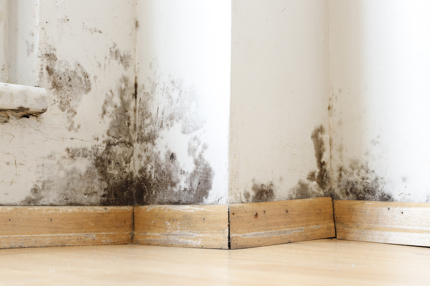

Mold is one of those problems homeowners hope they’ll never have to deal with. Unfortunately, in North Texas, where humidity, heavy storms, and even plumbing leaks are common, mold can become an issue faster than most people realize. At SWAT Restoration, we’ve helped countless families in Fort Worth, Aledo, Weatherford, and beyond identify, eliminate, and recover from mold infestations. Here’s what you need to know.
Mold is more than just a spot on the wall or a musty smell in the basement. Left untreated, mold can:
The bottom line: mold isn’t just unpleasant—it can be unsafe.
In our experience across North Texas homes, mold growth usually starts with moisture. Some of the most common triggers include:
If you’ve recently had water damage—or notice a musty smell—it’s smart to have your home inspected.
Trying to handle mold on your own may seem tempting, but household cleaners can’t get to the root of the problem. Professional remediation ensures:
At SWAT Restoration, we treat mold remediation as both a science and a service. Our process includes:
And because we’re a local, family-owned business, we handle every job with care and respect—treating your home as if it were our own.
Mold is a problem you shouldn’t ignore. From soggy walls to musty basements, SWAT Restoration is here as your first responders for disasters. Whether you’re facing significant damage or just suspect something might be wrong, we’ll step in quickly, eliminate the mold, and help restore your peace of mind.
If you’ve noticed signs of mold in your North Texas home, call SWAT Restoration today.